Stage 1: Set Up
Get started
Set Up will help you configure the necessary tools and files to begin building your own website. This tutorial uses GitHub Pages to deploy and store files for free. GitHub allows coders to stay organized and have access to the project's versioning history. With the help of Visual Studio Code, you will be able to edit and publish your changes in one place.
The provided folder contains template HTML and CSS files and other placeholder elements, like images and a resume. Content will be customized in Stage 2 of this tutorial.
1. Go to this repository with the template files.
2. Click the green Code button, Download ZIP, and drag it into your desktop for now.
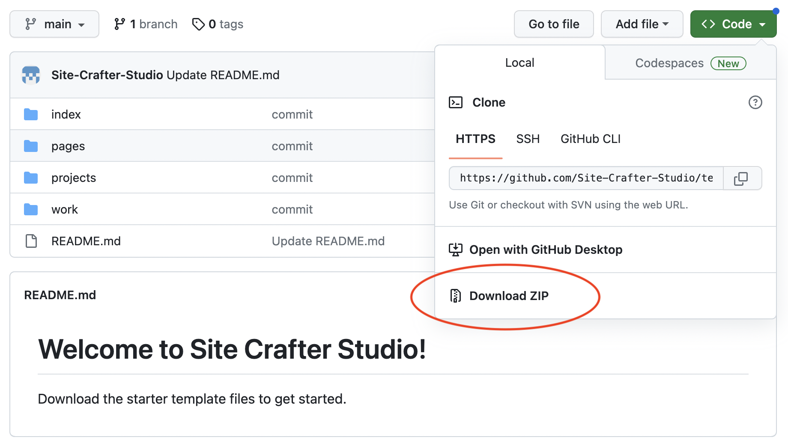
3. Double click on templates-main.zip to uncompress the folder on your desktop and make sure it contains the correct 3 folders: index, page1, and page2.
If you already have a GitHub account, skip to step #4. Keep in mind that your username will appear in your website's URL. To change your username: click on your profile picture in the top, right > Settings > Account > Change username.
1. Go to github.com and click Sign Up.
2. Enter your email, create a strong password, and enter a username.
⚠️ The username you choose will appear in your website’s URL.
3. Complete account verification steps and click Create repository.
4. In the repository name field, enter [yourusername].github.io, where you replace [yourusername] with the username you chose during account setup. For example:
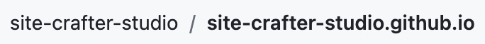
5. Ensure the privacy settings are set to Public, click Add a README file, and create the repository.
6. Click Add file and Upload file.
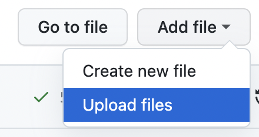
7. Drag and drop the 4 folders inside of the templates-main folder on your desktop.
8. Add a commit message, like “blank templates,” and click Commit changes.
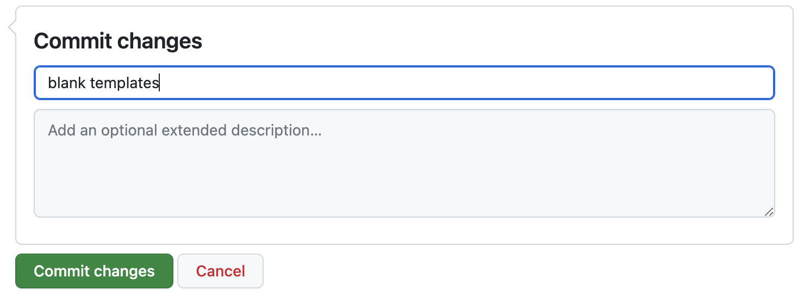
Visual Studio Code allows coders to edit files and publish changes to a github.io site from the app.
1. Go to Download Visual Studio Code and install the correct version of Visual Studio Code (VSCode) for your system.

Cloning a repository pulls down a full copy of all the repository data that GitHub.com has to your local machine.
1. Go back to your repository’s home page in GitHub, click the green Code button and copy the HTTPS address to your clipboard.
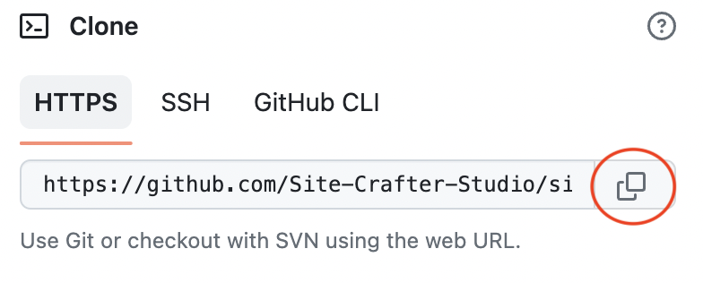
2. Open the VSCode application and open a new terminal.
3. Enter cd Desktop and hit return.
4. Enter git clone, paste the HTTPS address from GitHub, and hit return.
git clone https://github.com/{your-username}/{your-username}.github.io.git
5. Authenticate to your GitHub account with your username and password. VSCode may open a window in your browser to further authorize your account.
6. Go back to Visual Studio Code and click File > Open. Select the new folder (the clone of your repository) on your desktop.
As you make edits, it's important to push your changes to GitHub to keep your website up-to-date. The Source Control icon in the Activity Bar will show you the details of your current repository changes.
1. Open the README.md file from the Explorer menu on the left-hand side of the screen.
2. Replace the text with the following:
[My Website](https://{your-username}.github.io/index/index.html)
3. Save the file by clicking File > Save or cmd + S.
4. Click on the Source Control widget on the left-hand side of the screen. It will show that the README.md file has been changed.
5. Add a commit message like “update readme,” and click the blue Commit button.
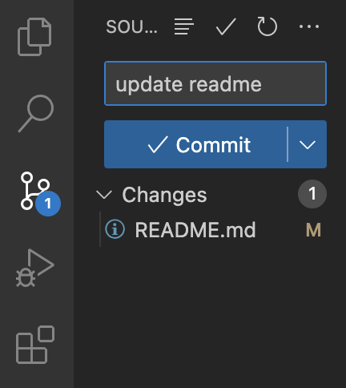
6. Push the changes to your GitHub repository by clicking the blue ↑ button. Don’t worry about adding a message here.
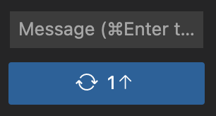
7. Click OK, Don’t Show Again if a popup window, like this, shows up:
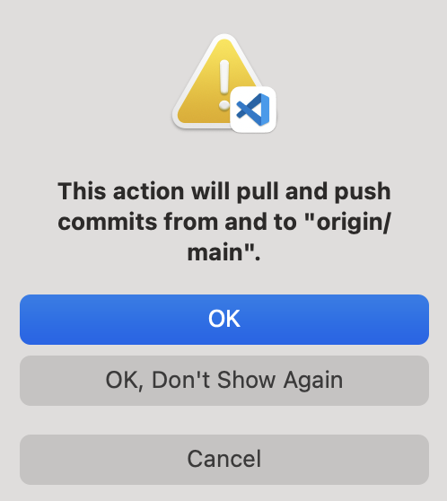
8. Go back to your repository’s home page on GitHub. You may need to refresh the page.
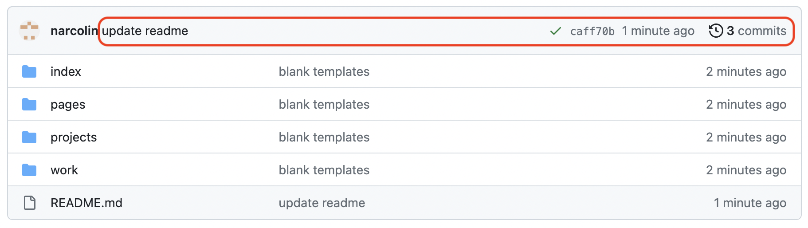
9. Click on the blue "My Website" link in the README section.
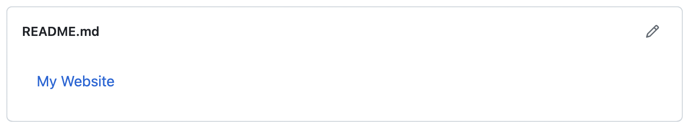
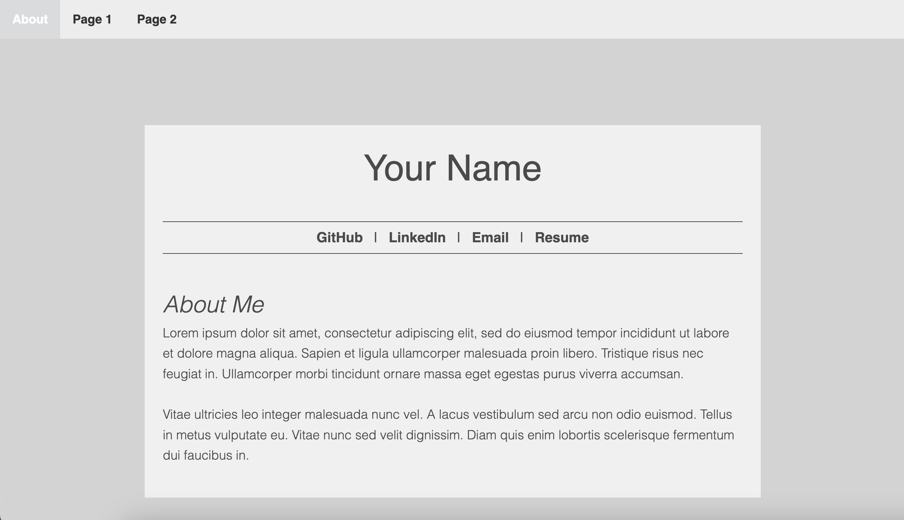
10. Begin Stage 2: Customize